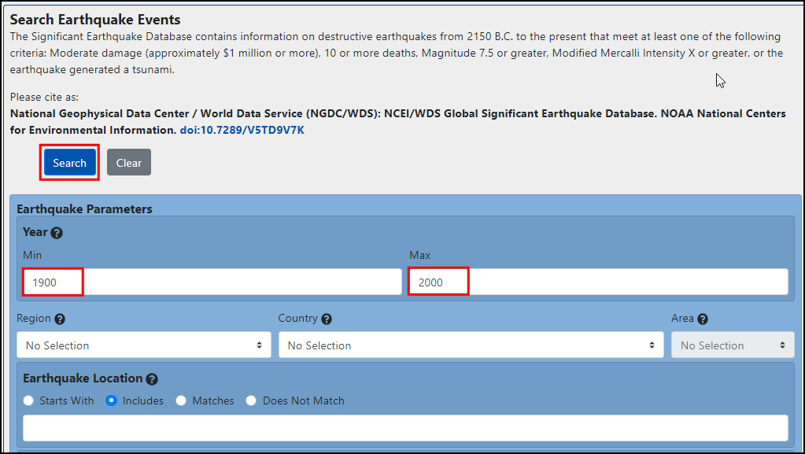
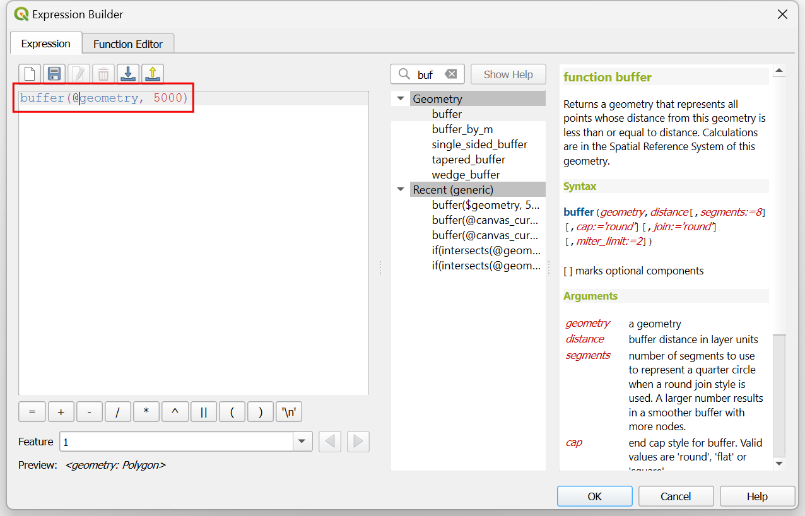
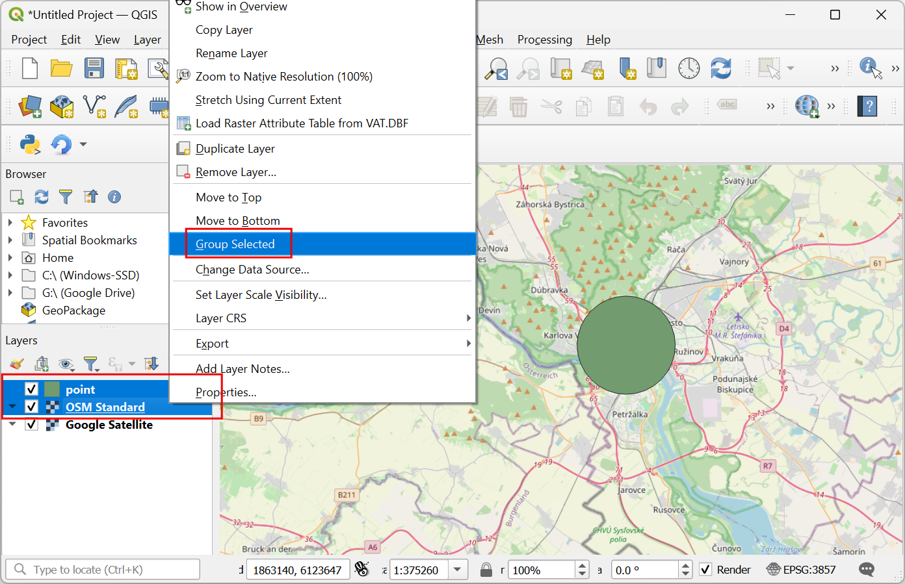

Analyse Nearest Neighbor (QGIS3)¶
GIS is heel nuttig bij het analyseren van ruimtelijke relaties tussen objecten. Een dergelijke analyse is om uit te zoeken welke objecten het dichtst bij een opgegeven object liggen. Er zijn meerdere manieren om deze analyse in QGIS uit te voeren. U kunt een ruimtelijke samenvoeging doen met behulp van Koppel attributen op dichtstbijzijnde of de afstanden naar alle objecten op een andere laag verkrijgen met behulp van het algoritme Afstandsmatrix uit de Toolbox van Processing. In deze handleiding zullen we het algoritme Afstand tot dichtstbijzijnde naaf uit de Toolbox van Processing verkennen, die niet alleen de afstand kan vinden naar het dichtstbijzijnde object, maar het ook met een lijn kan verbinden voor het visualiseren van de resultaten.
Overzicht van de taak¶
Gegeven de locaties van alle bekende aardbevingen tussen 1900 en 2000, zoek de dichtstbij gelegen bewoonde plaats voor elke locatie waar de aardbeving plaatsvond.
De gegevens ophalen¶
Voor deze handleiding zullen we een gegevensset downloaden van aardbevingen tussen 1900-2000 vanaf NOAA’s National Geophysical Data Center dat een grote gegevensset van alle significante aardbevingen sinds 2150 VC produceert. Bezoek het portaal NOAA NCEI en vul Min in met
1900en Max met2000. Dit zal alle incidenten van aardbevingen teruggeven die werden vastgelegd door NOAA tussen deze jaren. U kunt, voor andere specifieke resultaten, filteren met andere parameters. Klik op Search.

Als resultaat krijgen we 2585 incidenten met aardbevingen. Klik op het pictogram Download TSV.

Natural Earth heeft een mooie gegevensset Populated Places . Download de simple (less columns) dataset
Voor het gemak kunt u direct een kopie van beide gegevenssets downloaden vanaf de links hieronder:
earthquakes_2021_11_25_14_31_59_+0530.tsv
ne_10m_populated_places_simple.zip
Gegevensbronnen: [NCEI] [NATURALEARTH]
Procedure¶
Zoek in de QGIS Browser naar het bestand
ne_10m_populated_places_simple.zipen vergroot het. Sleep het bestandne_10m_populated_places_simple.shpnaar het kaartvenster.

U zult een nieuwe laag
ne_10m_populated_places_simplezien geladen in het paneel Lagen. Deze laag bevat de punten die bevolkte plaatsen weergeven. Nu zullen we de laag met aardbevingen laden. Deze laag wordt aangeboden als een tekstbestand Tab Seperated Values (TSV). Klik, om dit bestand te laden, op de knop Databronnen beheren openen op de werkbalk Databronnen. U kunt ook de sneltoets Ctrl + L gebruiken.

Selecteer, in het dialoogvenster Databronnen beheren, Tekengescheiden tekst.

Klik op de knop … naast Bestandsnaam en blader naar het gedownloade bestand
earthquakes-2021-11-25_13-39-30_+0530.tsv. Afhankelijk van het besturingssysteem zou het niet zichtbaar kunnen zijn in de map waar het naartoe werd gedownload. Als dat het geval is, schakel naar Alle bestanden (*; .) in het dialoogvenster Kies een tekengescheiden tekstbestand om te openen. Eenmaal geopend, selecteer Zelfgekozen tekstscheiders in het gedeelte Bestandsindeling en selecteerTab. In het gedeelte Geometrie definitie, kies Punt coördinaten. Standaard zullen de waarden voor de velden X-veld en Y-veld automatisch worden gevuld met de van toepassing zijnde velden uit de invoer. In ons geval zijn datLongitudeenLatitude. U kunt bij Geometrie CRS het standaard CRSEPSG:4326 - WGS 84laten staan. Als uw bestand coördinaten in een ander CRS bevat, zou u hier het van toepassing zijnde CRS moeten kiezen. Klik op Toevoegen, gevolgd door Close.

Zoom rond en verken beide gegevenssets. Elke rode punt geeft de locatie weer van een incident aardbeving, en elke groene punt geeft de locatie van een bewoonde plaats weer. Ons doel is om het dichtstbijzijnde punt van de laag met bewoonde plaatsen te zoeken voor elk punt op de laag met aardbevingen. Laten we de Attributentabel van de laag met aardbevingen inspecteren. Selecteer de laag en klik op het pictogram Attributentabel op de Werkbalk.

Er zijn
2586objecten, maar de gegevens bevatten enkele items zonder informatie over latitude of longitude. We moeten die verwijderen voordat we door kunnen gaan. Sluit de Attributentabel.

Ga naar het algoritme . Dubbelklik erop om het te openen.

Selecteer, in het dialoogvenster Remove Null Geometries,
earthquakes-2021-11-25_13-39-30_+0530als de Invoerlaag en selecteer het keuzevak Ook lege geometrieën verwijderen. Klik op Uitvoeren. Klik op Close als de verwerking is voltooid.

Een nieuwe laag
Geen geometrieën nullzal zijn toegevoegd aan het paneel Lagen. Voor de analyse zullen we deze laag gebruiken in plaats van de originele laag. Deselecteer de laagearthquakes-2021-11-25_13-39-30_+0530in het paneel Lagen om die te verbergen. Selecteer de laagGeen geometrieën nullen klik op de knop Attributentabel op de werkbalk Attributen.

U zult een lager aantal zien voor het totale aantal objecten omdat alle rijen met lege waarden voor latitude en longitude werden verwijderd. Sluit de attributentabel.

Nu is het tijd om de analyse Nearest neighbor uit te voeren. Zoek en lokaliseer het algoritme . Dubbelklik erop om het te openen.

Notitie
We kunnen ook een puntenlaag als uitvoer toevoegen, gebruik dan daarvoor het gereedschap Afstand tot dichtstbijzijnde naaf (punten).
Selecteer, in het dialoogvenster Afstand tot dichtstbijzijnde naaf (lijn naar naaf),
Geen geometrieën nullals de Bron puntenlaag. Selecteerne_10m_populated_places_simpleals de Doel navenlaag. Selecteernameals het Naaflaag naam attribuut. Het gereedschap zal ook de afstanden in een rechte lijn berekenen tussen de bewoonde plaats en de dichtstbijzijnde aardbeving. StelKilometersin als de Maateenheid en klik op Save to File… om het bestand op te slaan alsearthquakes_with_nearest_city.gpkg. Klik op Uitvoeren. Klik op Close als de verwerking is voltooid.

Terug in het hoofdvenster van QGIS zult u een nieuwe lijnlaag zien, genaamd
earthquakes_with_nearest_city, geladen in het paneel Lagen. Deze laag heeft objecten lijn die elk punt van een aardbeving verbinden met de dichtst bij gelegen bewoonde plaats. Klik met rechts op de laagearthquakes_with_nearest_cityen selecteer Attributentabel openen.

Scroll naar rechts naar de laatste kolommen en u zult 2 nieuwe attributen, genaamd HubName en HubDist, zien toegevoegd aan de originele objecten van de aardbevingen. Dit zijn de naam en de afstand tot de dichtstbijzijnde buur van de laag met bevolkte plaatsen.

If you want to give feedback or share your experience with this tutorial, please comment below. (requires GitHub account)